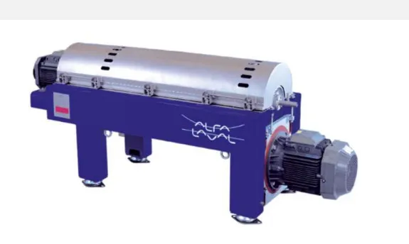

High-performance decanter centrifuges for small and medium capacity process separation. Precision engineering and modular design for maximum fluid clarity.
The Alfa Laval P1 series decanter centrifuges are built for reliable solid-liquid separation across a wide range of industrial applications. Primarily designed for small to medium installations, the P1 range offers extreme flexibility and high-efficiency G-force performance in a space-saving modular package.
With wetted parts made from AISI 316 stainless steel and customizable wear-resistant features, P1 decanters provide exceptional liquid clarity and solid dryness for your processing line, while significantly reducing disposal volumes and lifecycle costs.

Reduced size allows for easy integration into existing production facilities and skid-mounted systems.
Designed for low power consumption per unit of processed fluid, lowering your facility's energy requirements.
Fully automated solids discharge and liquid dam adjustment ensure continuous, uninterrupted processing.
Managing your liquid-solid separations:
Talk to our application engineers at Brigantine about sizing a P1 decanter for your facility.